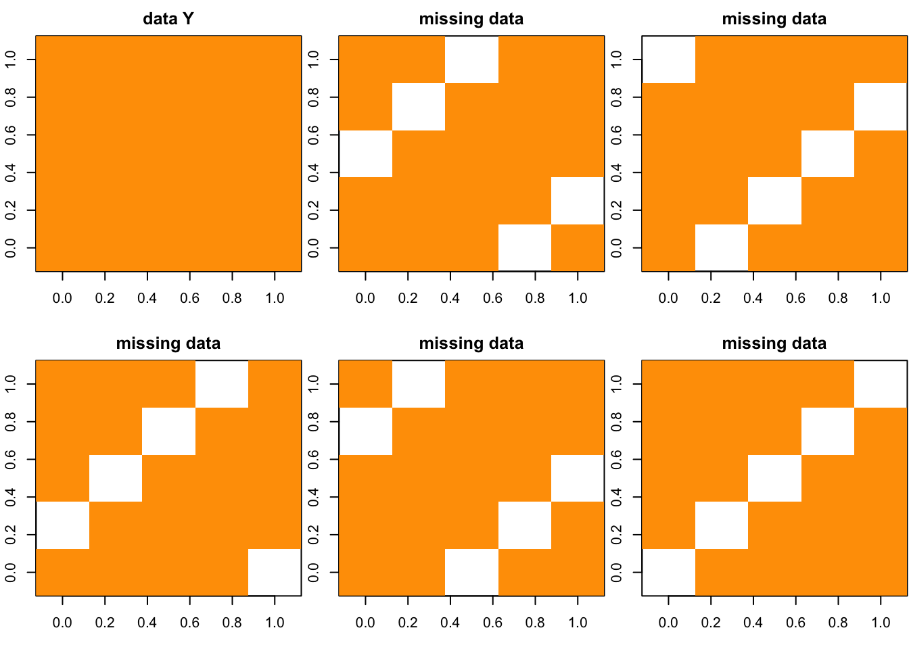
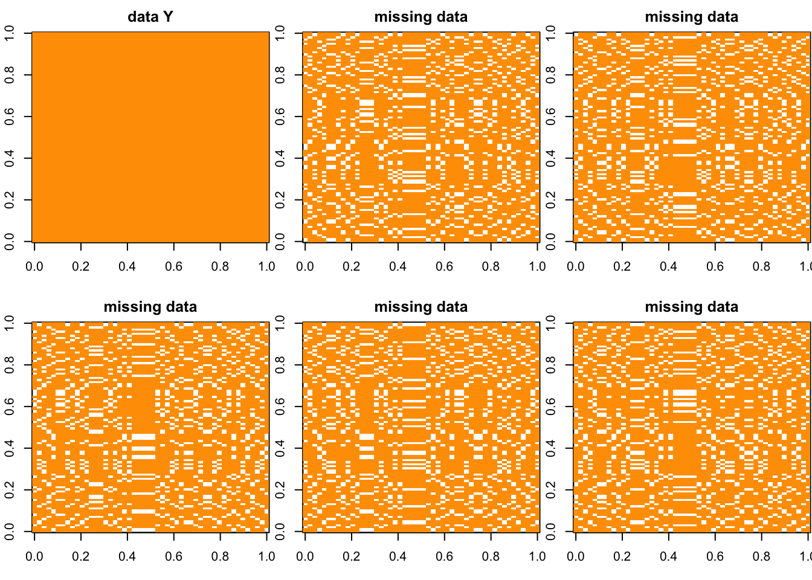

Last updated: 2017-02-02
Code version: c78d381
take 3-fold CV as example. We want to divide the data \(Y\) in to 3 parts to do 3-fold CV. We randomly divide the the columns into 3 sets and the rows into 3 sets as well. The data matrix \(Y\) is divided into 9 partition (by row and column permutation):
\[Y = \begin{pmatrix} Y_{11} & Y_{12} & Y_{13} \\ Y_{21} & Y_{22} & Y_{23} \\ Y_{31} & Y_{32} & Y_{33} \end{pmatrix}\]
Then \(Y_{(1)} = \{ Y_{11}, Y_{22} , Y_{33}\}\), \(Y_{(2)} = \{ Y_{12}, Y_{23} , Y_{31}\}\) and \(Y_{(3)} = \{ Y_{13}, Y_{21} , Y_{32}\}\) are orthogonal to each other. Then the data matrix \(Y\) is marked as: \[Y = \begin{pmatrix} Y_{(1)} & Y_{(2)} & Y_{(3)} \\ Y_{(3)} & Y_{(1)} & Y_{(2)} \\ Y_{(2)} & Y_{(3)} & Y_{(1)} \end{pmatrix}\]
For complete data set, we would use scheme 1. The imputation methods we consider are based on the model with low rank structure: \(LF^T\), so each \(Y_{(i)}\) in scheme 1 contains equally one set of indices of \(L_{.k}\) and \(F_{k.}\). This also helps to make sure that all \(i\)’s and \(j\)’s are included into each \(Y_{-(i)}\). Otherwise, we can’t make prediction when some times whole columns or rows are missing.
\[Y= \begin{pmatrix} Y_{11} & Y_{12} \\ Y_{21} & Y_{22} \end{pmatrix}= \begin{bmatrix} L^{(1)}F^{(1)} & L^{(1)}F^{(2)} \\ L^{(2)}F^{(1)} & L^{(2)}F^{(2)} \end{bmatrix} + E = \left[ \begin{array}{c} L^{(1)} \\ L^{(2)} \end{array} \right] \times \left[ \begin{array}{cc} F^{(1)}& F^{(2)} \end{array} \right] + E\]
In this case, \(Y_{(1)} = \{ Y_{11}, Y_{22} \}\), \(Y_{(2)} = \{ Y_{12}, Y_{21} \}\), and each of \(L^{(1)},F^{(1)},L^{(2)},F^{(2)}\) shows up in both \(Y_{(1)}\) and \(Y_{(2)}\) so the information contains in each \(Y_{(i)}\) are in balance.
start from five fold and can easily extend to 10 fold or K -fold.
To generate the cross validation data for missing value, I randomly pick the missing possition for each fold.
the code is like the following:
cross_plot = function(Y,k_fold = 5){
N = dim(Y)[1]
P = dim(Y)[2]
colindex = matrix(sample(P,P),ncol = k_fold)
rowindex = matrix(sample(N,N),ncol = k_fold)
missing= array(0,dim = c(k_fold,N,P))
foldindex = array(0,dim = c(k_fold,k_fold,2))
for(i in 1:k_fold){
for(j in 1:k_fold){
foldindex[i,j,1] = i
foldindex[i,j,2] = (i+j) %% k_fold
}
}
foldindex[which(foldindex == 0)] = k_fold
for(i in 1:k_fold){
missing[i, , ] = Y
for(j in 1:k_fold){
missing[i,rowindex[,foldindex[j,i,1]],colindex[,foldindex[j,i,2]]] = NA
}
}
par(mfrow = c(2,3), mar = (c(5,4,4,2)-1.9))
image(Y,main = "data Y")
for(i in 1:k_fold){
image(missing[i,,],main = "missing data")
}
return(missing)
}Starting from simplest case, where Y is \(5 \times 5\) matrix.
N = 5
P = 5
Y = matrix(rep(1,N*P),ncol = P)
g = cross_plot(Y)
for larger matrix
N = 50
P = 100
Y = matrix(rep(1,N*P),ncol = P)
g = cross_plot(Y) ## Session Information
sessionInfo()R version 3.3.0 (2016-05-03)
Platform: x86_64-apple-darwin13.4.0 (64-bit)
Running under: OS X 10.12.3 (unknown)
locale:
[1] en_US.UTF-8/en_US.UTF-8/en_US.UTF-8/C/en_US.UTF-8/en_US.UTF-8
attached base packages:
[1] stats graphics grDevices utils datasets methods base
other attached packages:
[1] workflowr_0.3.0 rmarkdown_1.3
loaded via a namespace (and not attached):
[1] backports_1.0.5 magrittr_1.5 rprojroot_1.2 htmltools_0.3.5
[5] tools_3.3.0 yaml_2.1.14 Rcpp_0.12.8 stringi_1.1.1
[9] knitr_1.15.1 git2r_0.18.0 stringr_1.1.0 digest_0.6.11
[13] evaluate_0.10 This R Markdown site was created with workflowr